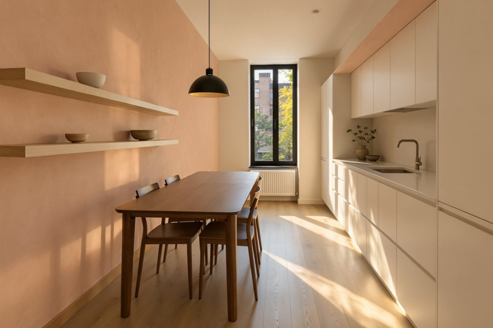
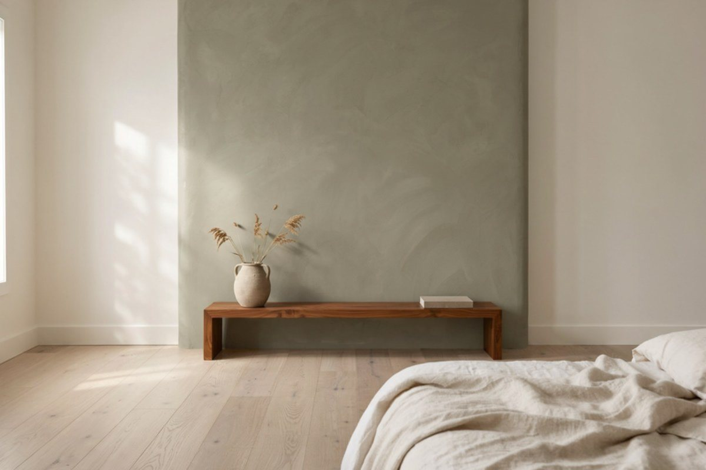
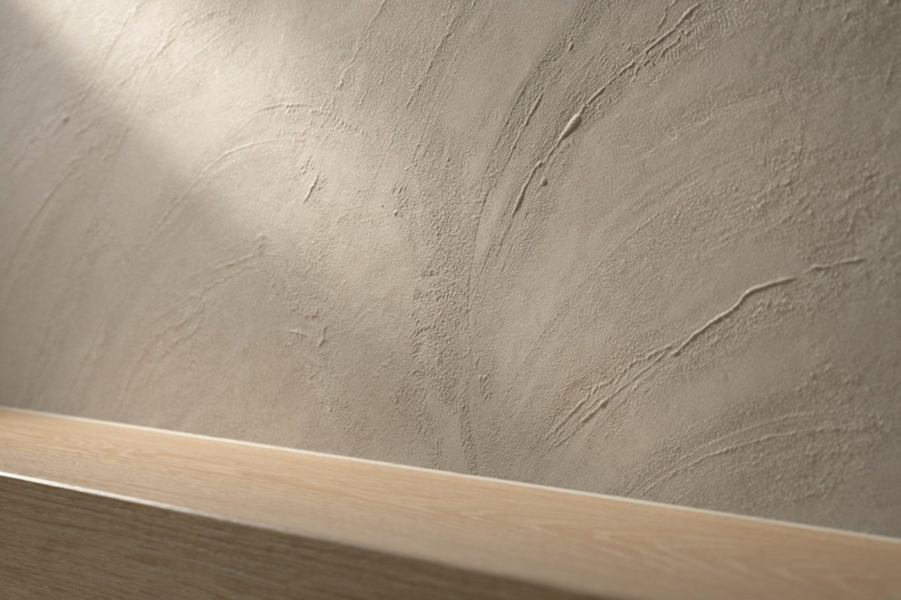

Walk through any Victorian or Edwardian semi in Leslieville, Roncesvalles, the Annex or Riverdale and you will find the same thing: a long brick party wall or chimney breast that someone stripped back to the masonry in 2009. It looked great in the listing photos. Ten years later it sheds sand onto the baseboard, collects dust in every mortar joint, and makes the room feel darker and colder than it should.
The interior design conversation has shifted. Designers are openly debating whether exposed brick is a timeless classic or a dated loft cliché, and the European and Latin American design press is already calling seamless mineral finishes the wall surface of 2027. In the GTA, the question we get is simpler: can you cover my brick without tearing anything out? Yes. That is exactly what microcement was made for.
Why Microcement Over Brick Beats Drywall
The usual fix for a tired brick wall is to strap it with furring, hang drywall, tape, mud and paint. It works, but it costs you depth and it looks like every other painted wall in the house.
You keep your square footage. Strapping and board eat 1.5 to 2 inches off the wall. On a 16-foot-wide Toronto semi, that is real room you are paying for. A levelled microcement system adds roughly 6 to 10 mm.
No framing, no hollow sound. The finish is bonded directly to the masonry. It feels solid when you knock on it because it is solid.
Texture you cannot get from paint. Hand-troweled microcement has soft tonal movement that reads as stone or plaster. It gives the wall the character the brick used to give, without the dust.
No dust, no shedding. Old soft brick and lime mortar slowly powder. Once it is consolidated, levelled and sealed, that stops.
It wraps corners and openings seamlessly. Chimney breasts, window reveals, arches and returns are coated continuously. No corner bead, no trim, no tape lines.
“Covering brick is not about hiding the house. It is about keeping the depth and character of masonry while losing the dust, the gaps and the cold.”
Microcement Over Brick Cost in Toronto (2026)
Interior microcement walls in the GTA typically run $18–$28 per square foot installed. Brick adds a levelling stage, because the mortar joints and uneven faces have to be filled flat before any finish coat goes on. Budget an extra $4–$8 per square foot for that prep, depending on how rough the brick is and whether it has been painted.
| Scope | Installed Cost (GTA, 2026) | Typical Timeline |
|---|---|---|
| Chimney breast, 50–80 sq ft | $1,800 – $3,400 | 3 – 4 days |
| Feature wall, 80–120 sq ft | $2,600 – $4,800 | 3 – 5 days |
| Full party wall, 250–350 sq ft | $6,500 – $12,000 | 5 – 7 days |
| Painted brick (strip or adhesion prep) | + $3 – $6 / sq ft | + 1 – 2 days |
For comparison, strapping, drywalling, taping and painting the same brick wall usually runs $7–$12 per square foot in Toronto once electrical box extensions, trim and window returns are counted. Microcement costs more up front, keeps the room size and gives you a finish that drywall and paint cannot copy.

How Microcement Is Applied Over Brick
Brick is one of the best substrates for microcement when it is dry and sound, and one of the worst when it is not. The difference is entirely in the prep. Here is the sequence we follow.
- Moisture and soundness check. We take moisture readings and tap-test the wall. Loose bricks are reset and crumbling mortar is raked out and repointed before anything else happens.
- Clean and consolidate. Dust, soot, old sealers and loose paint come off. Soft, sandy brick gets a penetrating consolidating primer so the coating bonds to the masonry, not to dust.
- Fill the joints. Recessed mortar joints are packed flush with a compatible mineral mortar. Skip this and every joint telegraphs through as a ghost grid.
- Levelling base coat with mesh. A cementitious levelling coat is troweled across the whole face with fibreglass mesh embedded. This bridges the transitions between brick and mortar, which expand at different rates.
- Two finish coats, hand-troweled. Each is sanded and cleaned before the next. This is where the colour depth and stone-like movement come from.
- Sealer matched to the wall. A matte or satin protective sealer, chosen to suit how much moisture that wall needs to release.
The interior face of an old solid-brick exterior wall is not the same as a party wall. Pre-war Toronto homes were built with double-wythe brick and no vapour barrier; those walls dry to the inside. If you put a tight, sealed finish on one that is already damp, you can trap moisture in the brick and cause spalling outside and peeling inside. We take moisture readings on every exterior-facing wall. If it is wet, we fix the cause (grading, eavestroughs, failed pointing) first, or we recommend a breathable lime plaster instead. Party walls and chimney breasts on interior walls are the ideal candidates.

Microcement Brick Wall Ideas for GTA Homes
- Warm limestone on a living room party wall. The most forgiving choice for a dim Toronto semi. It bounces light down a narrow room instead of absorbing it the way red brick does.
- Pale clay or terracotta for kitchens. Keeps some of the warmth of the original brick, without the open joints that collect grease and dust.
- Sage or mushroom on a bedroom chimney breast. Quiet, tactile and calmer than a wall of red masonry next to the bed.
- Charcoal on a fireplace wall. Strong contrast for a gas insert. Combine it with our microcement fireplace surround approach for a single seamless feature.
- Soften the corners. Brick returns and window reveals can be rounded during the levelling coat, giving the wall a plaster-like, Mediterranean edge.

Brick Walls Where We Say No
- Damp foundation walls. Basement brick or block that shows efflorescence, staining or high readings needs waterproofing first.
- Walls that are actively moving. Stepped cracks that keep opening point to a structural issue. Get it assessed before any finish goes on.
- Inside a wood-burning firebox. Microcement goes on the surround and chimney breast, not where flame touches.
- Brick you might want back. Once the joints are filled and the levelling coat is bonded, this is not a peel-off finish. If you are on the fence, cover one wall first.
Living With a Microcement Wall
Walls take far less wear than floors. Dust with a dry microfibre cloth and wipe marks with a damp cloth and pH-neutral cleaner. Avoid abrasive pads and solvent cleaners. On a living room or bedroom wall, the sealer typically lasts many years before it needs a refresh.
Where We Work
Artisan Coat finishes microcement walls, chimney breasts, floors and feature walls across Toronto, Mississauga, Brampton, Vaughan, Oakville, Etobicoke, North York, Scarborough, Richmond Hill, Markham, Burlington and the wider GTA. Brick assessment, repointing, levelling, finish and sealer are handled by one crew, backed by a 3-year written warranty.
The Short Version
Microcement over brick walls gives a Toronto home a seamless, stone-like surface without framing, drywall or lost square footage. In 2026, a chimney breast runs $1,800–$3,400, a feature wall $2,600–$4,800 and a full party wall $6,500–$12,000. Most jobs take three to seven days with no demolition.
Check moisture first, fill the joints, mesh the levelling coat and pick a sealer that suits the wall. Get those right and the dusty brick wall becomes the best surface in the room.